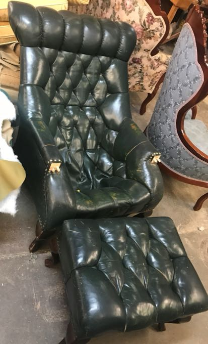
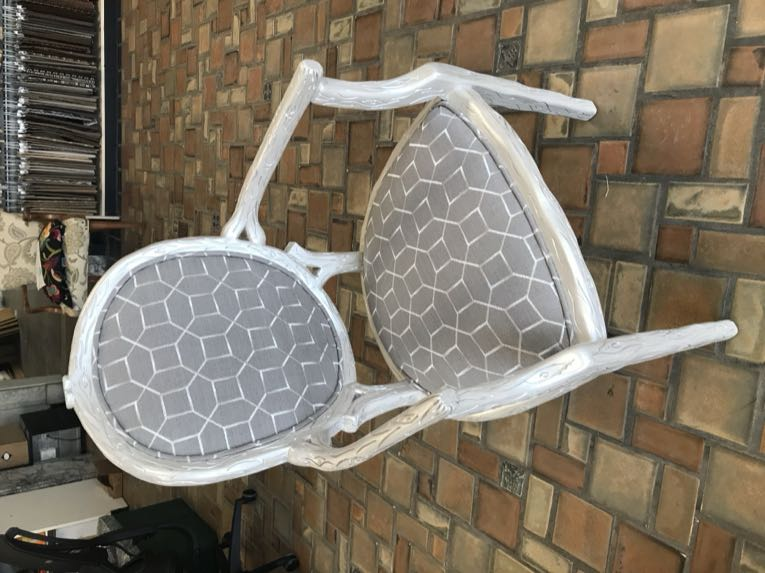

Residential
Reupholstery from the frame up
When we bring your furniture into our shop, we remove the old cover and padding. The frame is checked for tightness and any necessary repairs are made. Coil springs are retied if needed.
The finest fabric will not look good over a poorly prepared frame. Our upholsterers can also make style changes to give your furniture a new look — preserve your valued heirlooms, or update them to a contemporary design with fashionable fabrics to complement your decor.
- Custom ottomans
- Custom headboards
- In-home kitchen booths
- Boat seats
- Camper cushions
- Cushion repairs
- Gluing chairs & tables
- Furniture repairs


